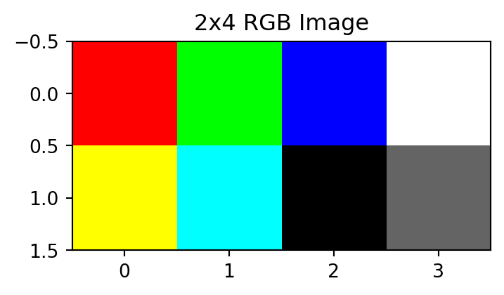

import numpy as np
import matplotlib.pyplot as plt
from PIL import ImageReal World Application
Image Transformation with Matrices
This section explores how images are represented as matrices and demonstrates various transformations using Python. We’ll cover both grayscale and color images, showing how matrix operations can be used to create different visual effects.
Required Libraries
1. Black and White Images
Understanding Grayscale Representation
Grayscale images are typically represented as 2D arrays (matrices) where each element represents the intensity of a pixel. When working with uint8 (integers) data type, the values range from 0 (black) to 255 (white). When working with float data type, the values should be normalized to the range 0 to 1.
# Create a simple 3x4 grayscale image
grayscale_example = np.array([
[0, 85, 170, 255], # Different shades of gray
[255, 170, 85, 0], # Reversed pattern
[128, 128, 128, 128] # Medium gray
])
plt.figure(figsize=(6, 4))
plt.imshow(grayscale_example, cmap='gray')
plt.colorbar()
plt.title('3x4 Grayscale Example')
plt.show()2. Color Images (RGB)
Colors can be represented in various digital formats - from HSV (Hue, Saturation, Value) to CMYK (Cyan, Magenta, Yellow, Key/Black). Here,we’ll work with the RGB (Red, Green, Blue) color model, where each pixel’s color is created by combining different intensities of these three primary colors.
RGB Color Model
Color images use three channels: Red, Green, and Blue. Each pixel is represented by three values, creating a 3D array with shape (height, width, 3). As with grayscale images, the values can be either in the range 0-255 (uint8) or 0-1 (float).
Common Colors:
- Black: (0, 0, 0)
- White: (255, 255, 255)
- Pure Red: (255, 0, 0)
- Pure Green: (0, 255, 0)
- Pure Blue: (0, 0, 255)
- Yellow: (255, 255, 0) [Red + Green]
- Magenta: (255, 0, 255) [Red + Blue]
- Cyan: (0, 255, 255) [Green + Blue]
Simple RGB image with common colors
simple_rgb = np.array([
[[255,0,0], [0,255,0], [0,0,255], [255,255,255]], # top row
[[255,255,0], [0,255,255],[0,0,0], [100,100,100]] # bottom row
])
plt.figure(figsize=(4, 4))
plt.imshow(simple_rgb)
plt.title('2x4 RGB Image')
plt.show()
3. Converting Between Images and Matrices
Understanding Image Arrays and Reshaping
A grayscale image is stored as a 2D array with shape (height, width), while a color image uses a 3D array with shape (height, width, 3). For example, a 100x100 color image has shape (100, 100, 3), where the third dimension holds RGB values.
Matrix operations require 2D arrays, so we need to reorganize our 3D color images. We transform from height × width × 3 to a matrix of (height × width) rows by 3 columns, flattening the spatial dimensions while keeping color information.
The reshape(-1,3) method transforms our 3D color image into a 2D matrix. The -1 tells NumPy to automatically calculate the number of rows needed, while 3 specifies we want 3 columns. For example, an image of shape (100,100,3) becomes a matrix of shape (10000,3), where each row represents one pixel’s values. The columns have a specific meaning: the first column contains all red values, the second green, and the third blue.
Example
Let’s illustrate this is a simple example:
img_2by2 = np.array([
[[1,2,3],[4,5,6]], # top row
[[7,8,9],[10,11,12]] # bottom row
])
print("The original image:")
print(img_2by2)
print("Shape:", img_2by2.shape)
print("\n" + "-"*40 + "\n") # adds a dividing line
M_2by2 = img_2by2.reshape(-1,3)
print("The reshaped matrix:")
print(M_2by2)
print("Shape:", M_2by2.shape)The original image:
[[[ 1 2 3]
[ 4 5 6]]
[[ 7 8 9]
[10 11 12]]]
Shape: (2, 2, 3)
----------------------------------------
The reshaped matrix:
[[ 1 2 3]
[ 4 5 6]
[ 7 8 9]
[10 11 12]]
Shape: (4, 3)Notice that the columns represent red, green, and blue values respectively. This process is reversible. If we write M_2by2.reshape(img_2by2.shape) we get img_2by2 back - no need to remember the original dimensions since they’re stored in the shape attribute. However, if you want, you can also write M_2by2.reshape(2,2).
M_2by2.reshape(img_2by2.shape)array([[[ 1, 2, 3],
[ 4, 5, 6]],
[[ 7, 8, 9],
[10, 11, 12]]])Helper Functions
We’ll use these helper functions to convert between image and matrix formats throughout our examples:
def image_to_matrix(image):
"""Convert image to matrix format (n_pixels × 3)"""
return image.reshape(-1, 3)
def matrix_to_image(matrix, original_shape):
"""Convert matrix back to image format"""
return matrix.reshape(original_shape)4. Color Transformations Using Permutation Matrices
Swapping Color Channels
We can use permutation matrices to swap color channels:
def swap_colors(image, permutation_matrix):
"""Apply color permutation to image"""
matrix = image_to_matrix(image)
transformed = matrix @ permutation_matrix
return matrix_to_image(transformed, image.shape)
# Example permutation matrices
RGB_to_BGR = np.array([
[0, 0, 1],
[0, 1, 0],
[1, 0, 0]
])
Exercise: Find all six 3×3 permutation matrices.
Identity:
\(\begin{bmatrix}1&0&0\\0&1&0\\0&0&1\end{bmatrix}\)
Single swap (R-G):
\(\begin{bmatrix}0&1&0\\1&0&0\\0&0&1\end{bmatrix}\)
Single swap (R-B):
\(\begin{bmatrix}0&0&1\\0&1&0\\1&0&0\end{bmatrix}\)
Single swap (G-B):
\(\begin{bmatrix}1&0&0\\0&0&1\\0&1&0\end{bmatrix}\)
Cyclic (R→G→B→R):
\(\begin{bmatrix}0&0&1\\1&0&0\\0&1&0\end{bmatrix}\)
Cyclic Cyclic (R→B→G→R):
\(\begin{bmatrix}0&1&0\\0&0&1\\1&0&0\end{bmatrix}\)
5. Grayscale Conversion and Negative
When converting a color image to grayscale, we don’t simply average the RGB values. Our eyes have different sensitivities to different colors, with green light being perceived as brightest and blue as darkest. To create natural-looking grayscale images, we use weighted averages that match human perception: 29.9% for red, 58.7% for green, and 11.4% for blue.
The negative of an image can be obtained by subtracting each pixel value from the maximum possible value (255 for 8-bit images). Thanks to NumPy’s broadcasting capabilities, we can simply write 255 - image and this operation will be applied to every pixel value automatically, whether it’s a grayscale or color image. Here’s a simple function to create image negatives:
def to_grayscale(image):
"""Convert RGB image to grayscale using weighted sum"""
weights = np.array([0.299, 0.587, 0.114])
matrix = image_to_matrix(image)
grayscale_values = matrix @ weights
return grayscale_values.reshape(image.shape[:2])
def create_negative(image):
"""Create negative of an image"""
return 255 - image
# Upload black and white image of a dog
dog = np.array(Image.open('grayscale.png').convert('L'))
# Show image and negative
fig, axes = plt.subplots(2, 1, figsize=(8, 10))
axes[0].set_title('Original Grayscale Image')
axes[0].imshow(dog, cmap='gray')
axes[1].set_title('Negative Image')
axes[1].imshow(255-dog,cmap = 'gray')
plt.tight_layout()
plt.show()
6. Color Filters
Implementing a Sepia Filter
A sepia filter transforms a regular color image into one with a warm, brownish tone reminiscent of vintage photographs. To create this effect, we need to adjust each color channel using specific weights. For each pixel, the new RGB values are calculated as a combination of the original values:
The red channel is amplified with warm tones The green channel is moderately reduced The blue channel is significantly reduced
This creates the characteristic reddish-brown tint that gives sepia images their antique appearance.
def apply_sepia(image):
"""Apply sepia filter to image"""
sepia_matrix = np.array([
[0.393, 0.349, 0.272],
[0.769, 0.686, 0.534],
[0.189, 0.168, 0.131]
])
matrix = image_to_matrix(image)
sepia = matrix @ sepia_matrix
# Clip values to valid range
sepia = np.clip(sepia, 0, 1)
return matrix_to_image(sepia, image.shape)Implementing a Color Intensification Filter
A color intensification filter makes images more vibrant by amplifying the primary colors while reducing color bleeding between channels. To create this effect, each color channel is multiplied by 1.5 (intensifying its own color) while subtracting a quarter of the other colors’ intensities. This process:
- Boosts each channel’s own color
- Reduces the influence of other colors
- Increases contrast between different colored areas
This creates a more vivid appearance with enhanced color separation and impact.
def intensify_colors(image):
"""Apply color intensification filter to image"""
intensity_matrix = np.array([
[1.5, -0.25, -0.25],
[-0.25, 1.5, -0.25],
[-0.25, -0.25, 1.5]
])
matrix = image_to_matrix(image)
intensified = matrix @ intensity_matrix
# Clip values to valid range
intensified = np.clip(intensified, 0, 1)
return matrix_to_image(intensified, image.shape)Example Usage
Here’s how to use these transformations on an actual image:
# Load an image: Open it in Image, and convert it to a numpy array as a float
image = np.array(Image.open('city_river.jpg')).astype(float)/255
# Display original and transformed versions
fig, axes = plt.subplots(5, 1, figsize=(10,25))
axes[0].imshow(image)
axes[0].set_title('Original')
axes[1].imshow(swap_colors(image, RGB_to_BGR))
axes[1].set_title('RGB to BGR')
axes[2].imshow(to_grayscale(image), cmap='gray')
axes[2].set_title('Grayscale')
axes[3].imshow(apply_sepia(image))
axes[3].set_title('Sepia')
axes[4].imshow(intensify_colors(image))
axes[4].set_title('Intensification')
plt.tight_layout()
plt.show()
Conclusion
This section demonstrates how matrices naturally represent and transform digital images. When an RGB image is reshaped, it becomes a matrix with three columns representing the color channels: \[ \begin{bmatrix} \color{red}\uparrow & \color{green}\uparrow & \color{blue}\uparrow\\ \color{red}\mathbf{c}_1 & \color{green}\mathbf{c}_2 & \color{blue}\mathbf{c}_3\\ \color{red}\downarrow & \color{green}\downarrow & \color{blue}\downarrow \end{bmatrix}. \]
The power of matrix multiplication (Equation 3.1) becomes evident in image processing. When we multiply this matrix by another matrix on the right, we take linear combinations of these color channels, enabling various transformations:
- Color channel permutations (by rearranging columns)
- Grayscale conversion (by weighted averaging of channels)
- Sepia filter effects (through specific linear combinations)
This direct connection between abstract matrix operations and visual transformations provides a concrete example of linear combinations in practice. Understanding how matrices act on these color channels helps explain why matrix multiplication works the way it does and illustrates its practical applications.